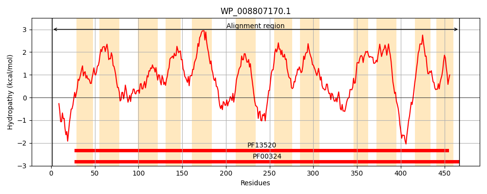
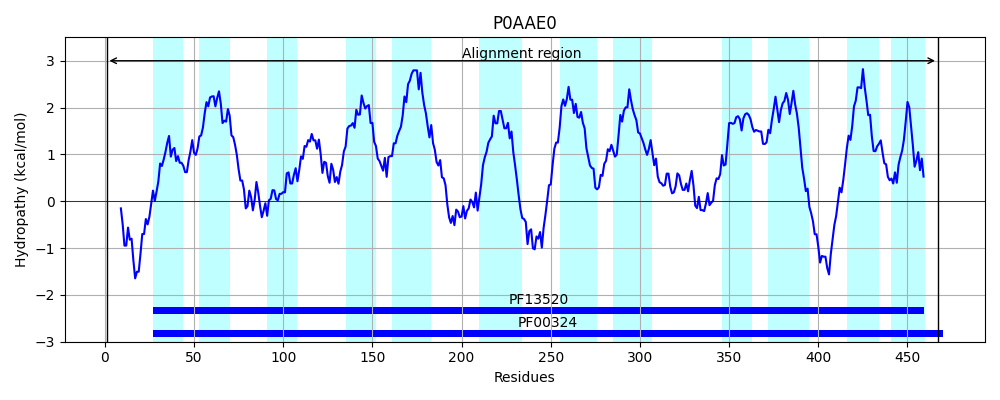
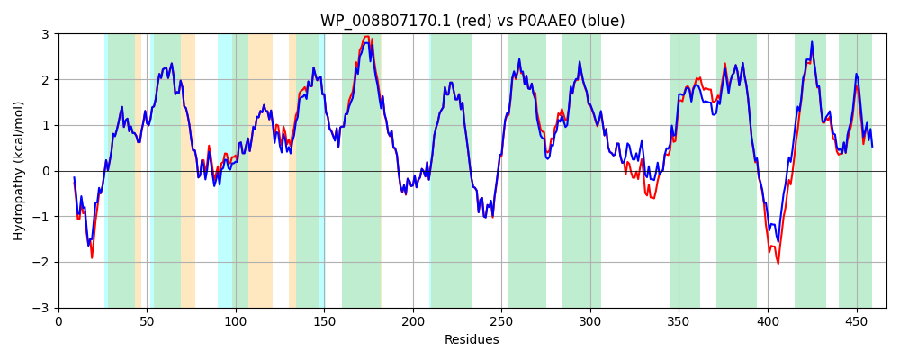

Hit Accession: P0AAE0
Hit TCID: 2.A.3.1.7
Hit Description: gnl|BL_ORD_ID|8658 gnl|TC-DB|P0AAE0|2.A.3.1.7 D-serine/D-alanine/glycine transporter - Escherichia coli.
Mach Len: 467
e:0.000000
Query TMS Count : 12
Hit TMS Count: 12
TMS-Overlap Score: 11.450000
Predicted Substrates:CHEBI:5584;hydron, CHEBI:4087;D-alanine, CHEBI:4245;D-serine, CHEBI:5460;glycine, CHEBI:9116;serine, CHEBI:40009;D-cycloserine
BLAST Alignment:
Score: 2239 , Bit scores: 867 bits, E-value: 0.0e+00, Alignment length: 467, Percentage identity: 93
Query: 1 MVDQVKVAAIEQEPTEQSLRRNLTNRHIQLIAIGGAIGTGLFMGSGKTISLAGPSIIFVYMIIGFMLFFVMRAMGELLLSNLEYKSFSDFAADLLGPWAGYFTGWTYWFCWVVTGMADVVAITAYAQFWFPGLSDWVASLAVILLLLGLNLATVKMFGEMEFWFAMIKIVAIVALIVVGLVMVMMHFKSPTGVEASFAHLWNDGGWFPKGLSGFFAGFQIAVFAFVGIELVGTTAAETKDPEKSLPRAINSIPLRIIMFYVFALIVIMSVTPWSSVVPSKSPFVELFVLVGLPAAASLINFVVLTSAASSANSGVFSTSRMLFGLAQDGQAPKMFAKLSKRAVPAKGLTFSCMCLLGGVVMLMVNPSVIAAFTMITTVSAILFMFVWTIILCSYLVYRKKRPQLHEKSKYKMPLGKFMCWVCMAFFVFVLVLLTLEDDTREALMVTPLWFVLLGAGWLFAGKKRLAK 467
MVDQVKV A +Q P EQSLRRNLTNRHIQLIAIGGAIGTGLFMGSGKTISLAGPSIIFVYMIIGFMLFFVMRAMGELLLSNLEYKSFSDFA+DLLGPWAGYFTGWTYWFCWVVTGMADVVAITAYAQFWFP LSDWVASLAVI+LLL LNLATVKMFGEMEFWFAMIKIVAIV+LIVVGLVMV MHF+SPTGVEASFAHLWNDGGWFPKGLSGFFAGFQIAVFAFVGIELVGTTAAETKDPEKSLPRAINSIP+RIIMFYVFALIVIMSVTPWSSVVP KSPFVELFVLVGLPAAAS+INFVVLTSAASSANSGVFSTSRMLFGLAQ+G APK FAKLSKRAVPAKGLTFSC+CLLGGVVML VNPSVI AFTMITTVSAILFMFVWTIILCSYLVYRK+RP LHEKS YKMPLGK MCWVCMAFFVFV+VLLTLEDDTR+AL+VTPLWF+ LG GWLF GKKR A+
Sbjct: 1 MVDQVKVVADDQAPAEQSLRRNLTNRHIQLIAIGGAIGTGLFMGSGKTISLAGPSIIFVYMIIGFMLFFVMRAMGELLLSNLEYKSFSDFASDLLGPWAGYFTGWTYWFCWVVTGMADVVAITAYAQFWFPDLSDWVASLAVIVLLLTLNLATVKMFGEMEFWFAMIKIVAIVSLIVVGLVMVAMHFQSPTGVEASFAHLWNDGGWFPKGLSGFFAGFQIAVFAFVGIELVGTTAAETKDPEKSLPRAINSIPIRIIMFYVFALIVIMSVTPWSSVVPEKSPFVELFVLVGLPAAASVINFVVLTSAASSANSGVFSTSRMLFGLAQEGVAPKAFAKLSKRAVPAKGLTFSCICLLGGVVMLYVNPSVIGAFTMITTVSAILFMFVWTIILCSYLVYRKQRPHLHEKSIYKMPLGKLMCWVCMAFFVFVVVLLTLEDDTRQALLVTPLWFIALGLGWLFIGKKRAAE 467 | Protein Hydropathy Plots: |
|---|
|  |  |
Pairwise Alignment-Hydropathy Plot:
|
|---|
|  |